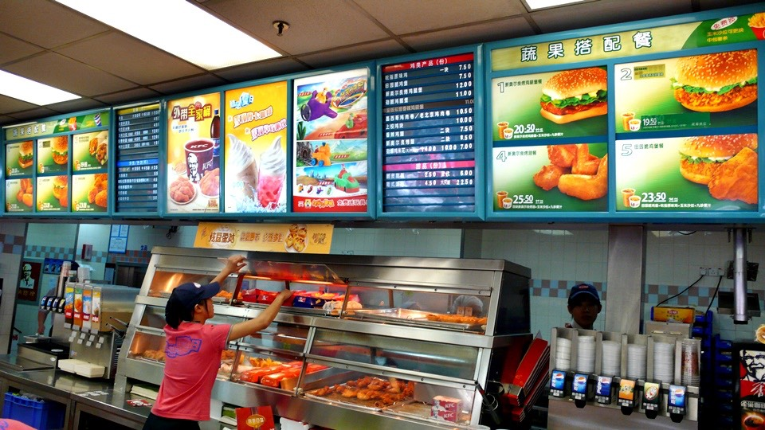
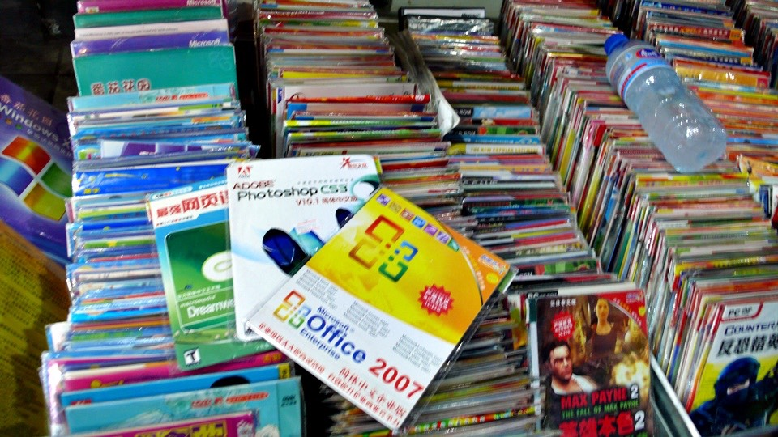
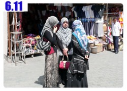

在開始展開烏魯木齊開心玩之前，有幾件事情要先處理好。
第一：睡個自然醒。
這個好辦，隔天睡到早上將近九點，看到自己睡到自然醒的功力衰退這麼多，以前那個睡到中午才醒的我跑哪去了~_~
第二：領台灣寄來的補給品
米莎莎從台灣寄了一箱補給品，MSI的Jeff也寄了一箱電腦的補給品，通通寄到烏魯木齊的百花村電腦城。
這個地方正好位於烏魯木齊市區的正中央，昨天很巧，隨便騎就找到這裡。
我只問了一個路人，說電腦城該怎麼走，他就指了指我後面說這一棟大樓就是了，儘管烏魯木齊這麼大，依然順利找到了這裡。
住的地方就在電腦城附近找一間招待所，這樣用走的就可以過去，很輕鬆。
等和我同住的房客退房離開之後，我才放心的離開房間，先去樓下買了兩包牛奶當早餐。
這個很像台灣菜市場的養樂多媽媽，都是賣一些牛奶類的製品。
這樣的塑膠袋牛奶在中國已經喝了數不清多少包，都是買來用嘴巴咬一個洞之後就可以吸著喝。
在烏魯木齊，我付過錢之後，老闆娘居然拿了根吸管給我。
這個小小的舉動，再度震撼了我！這裡真的是一個文明的大都市呀，經歷過戈壁灘和火焰山，這裡真的像是外星球的殖民地。
我已經完全退化成鄉巴佬，穿著藍白拖，看到什麼景色都覺得好不可思議，揮了揮手說不需要吸管，繼續用鄉下人的方法喝牛奶。
離開巷子就會看到很多書報攤，先買一張烏魯木齊的地圖，這樣這幾天閒晃才不會把自己給弄丟。
三十秒就走到了百花村電腦城，周邊也都是賣電腦、3C、軟體硬體啥都賣的科技集散地。
基本上就是NOVA加上黃色鬼屋這種調調的電腦大賣場，只要說的出口的3C品牌這邊都找的到。
從進門的那一瞬間，立刻覺得自己剛穿過了任意門，回到了台北市。
一層一層的往上走，這邊的店員比較含蓄，不像台灣那樣拉客拉得很兇，感覺比較親切一點。
問了一下我要找的那個地方在哪裡，走過去看發現門是鎖著的，透過窗戶裡面也沒開燈，都已經快中午了還沒有人上班嗎？
等了十幾分鐘，就放棄打算回旅館繼續睡回籠覺了，走回去的路上，我換個口味吃了一種很久沒吃的東西。
國際炸雞連鎖店，在中國營業、價錢跟在台灣幾乎一樣，但是以當地的收入來看，這邊真是很貴的消費。
可是所有的座位都坐得滿滿的，家長帶著小孩開心的吃速食，為了展現自己回到大都市的表象，就來個漢堡吧。

回旅館稍微發呆一下，一部電影還沒看完，就睡著了，沉沉的睡眠中，被房內的電話給吵醒。
是樓下服務員打的，說有人找我。看了看手錶差不多下午四點，電腦城那邊終於有人上班了，收到我的Email所以直接來找我吧。
跟著小白(MSI的新疆業務)再次走回電腦城，請人打開門之後，期待已久的補給品總算到手啦 :D
一共有兩個大箱子，小白幫我拿一個，再次走回招待所，回去的路上買了一些點心吃。
真的是好加在住的地方跟電腦城離這麼近，不然今天這樣來來回回的走，光想就覺得累人了。
回旅館開始拆箱，米莎莎寄了好多東西給我，還有一張小卡片。
補給品的清單有痠痛貼布、備用的GPS、沖泡式飲品、四角褲、口罩、眼藥水、護唇膏等琳瑯滿目的東西。
當然還有小多的備用零件，我跟米莎莎說寄四條內胎、兩條外胎給我。
這樣我就能把騎了五千公里的外胎給換掉，結果米莎莎寄顛倒了，我一口氣收到四條外胎和兩條內胎。
行李裡面還有兩條新的外胎，所以現在一共有六條外胎，這樣一路騎到巴黎都不需要再補給外胎了~_~
寄錯了啦，虧我出發前的最後一個晚上，還在跟妳用標籤紙把每個東西都貼上名字，怕的就是寄錯東西，結果還是一樣寄錯。
唉～算了，該來的東西都有來就好，數量不對是小意思。
Jeff的包裹是120G的外接硬碟、2G的隨身碟(這樣我就不用再拿iPod去接網吧的電腦了)還有一台全新的S262筆記型電腦。
要跟我手上這一台S300作交替，換一台更輕便的我比較好攜帶。
學電腦的人碰到電腦真是很恐怖的事情，從拆箱之後的一整個下午，我都在忙著用外接硬碟備份和轉移資料到新的電腦上。
還有許多的應用程式需要重新安裝，網頁製作、照片管理、GPS軟體、Email設定、FTP設定....一大堆的東西都要重新再來一次。
但灌好一台新電腦還蠻有成就感的，S262像是縮小版的S300要繼續陪我走到莫斯科，到那邊會再進行第二次的補給作業。
說點黑色笑話，因為有些大軟體是電腦裡面沒有附贈，而我自己也沒有帶安裝光碟的。
但是沒有這些軟體，就沒辦法即時製作網頁啦，幸虧隔壁就是電腦城，走去那邊轉一圈，軟體光碟應有盡有，
售價當然是很恐怖的低，因為是盜版的。

拿了一張光碟問價錢，老闆娘說『那是DVD的，很貴！］
『很貴？要多少錢？』
『八塊。』
一套上萬塊的軟體這邊賣八塊，而且還是超級大合輯就是了XD
這邊怎麼看都是當年的光華商場，雖然台灣的已經拆掉，而且好幾年都沒有這樣的光景，可是烏魯木齊可是有著一模一樣的回憶喔～
繼續閱讀：6.11 烏魯木齊開心玩

中國-人民幣－ 1：4.3 台幣
6.10
總計：51元
早餐牛奶兩包2元、市區地圖3元、午餐KFC19.5元、零食蔥花餅、胡椒餅、可樂、冰棒6.5元、住店20元、晚餐滷雞腳10元